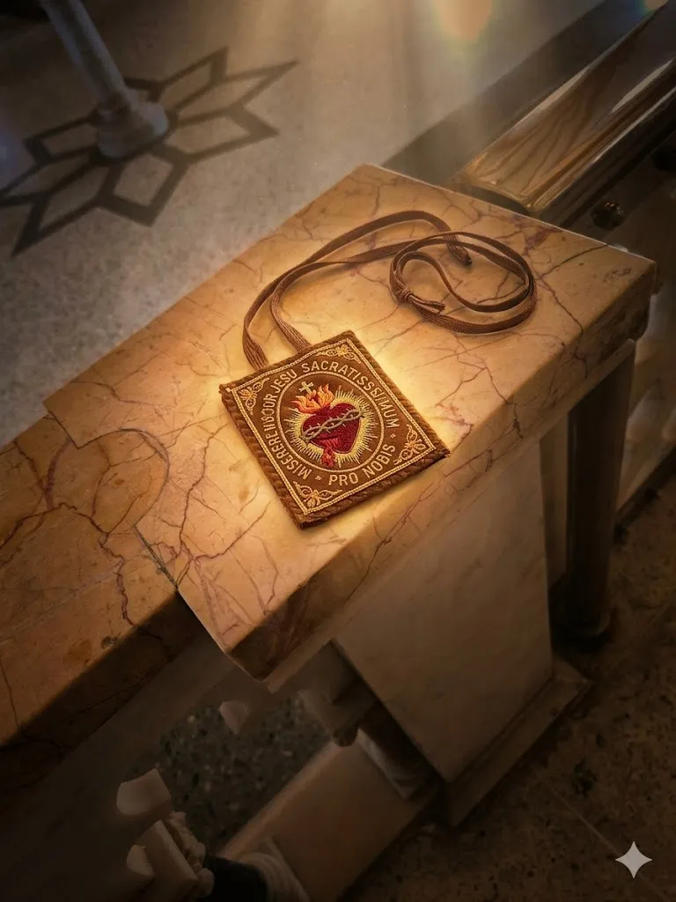
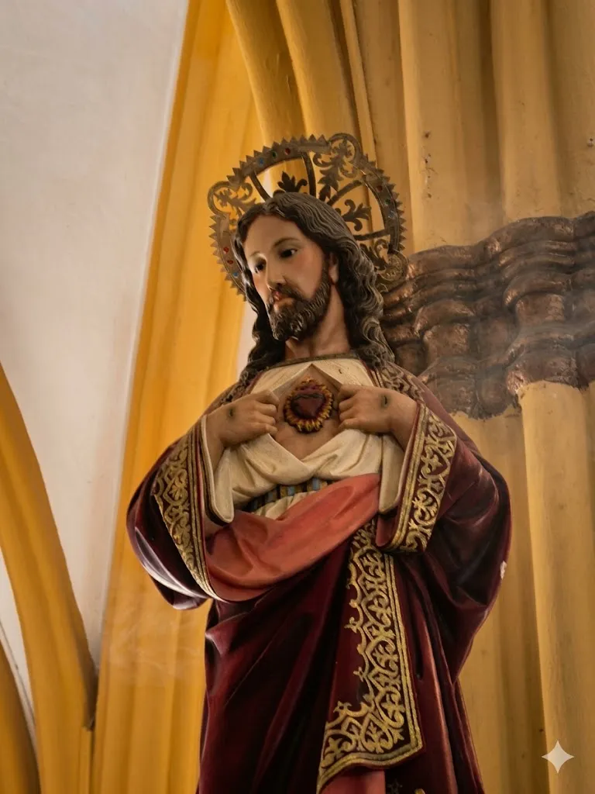
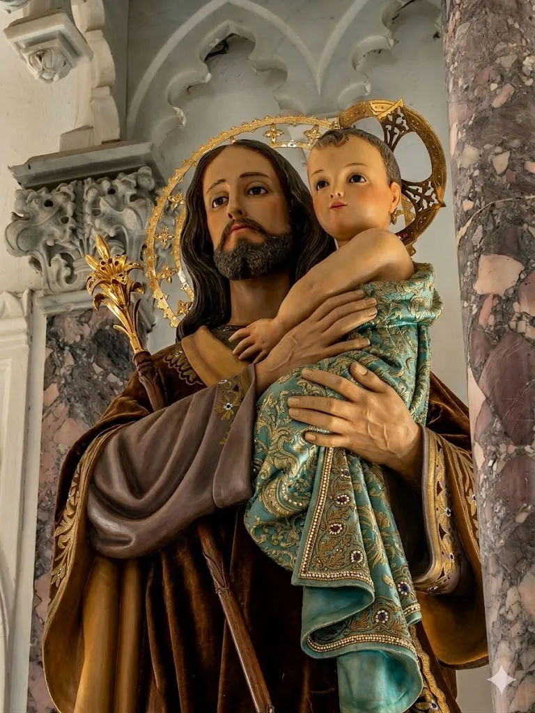
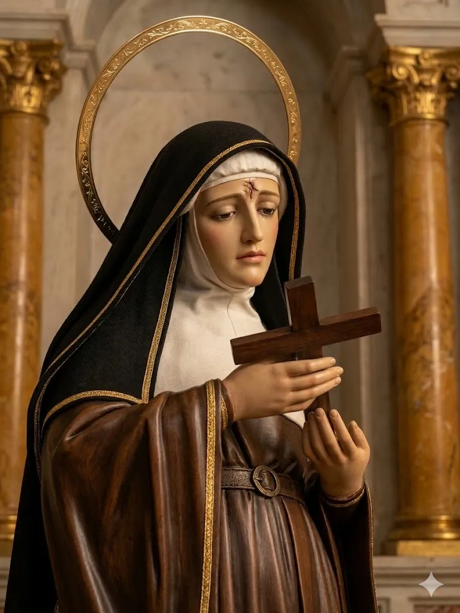

"Mantengamos firmemente la confesión de nuestra esperanza, porque fiel es el que hizo la promesa" (Hebreos 10, 23)
Nuestras Cofradías y Sociedades son asociaciones de fieles que, movidos por una profunda piedad popular, se unen para fomentar el culto público, las obras de caridad y el cuidado de nuestras tradiciones más hermosas.
Ellos son los encargados de mantener vivas las devociones que han marcado la historia de nuestra parroquia, organizando las novenas, vistiendo a las imágenes veneradas y preparando con amor maternal y fraternal las grandes procesiones de nuestro pueblo.


Consagrados al amor misericordioso de Cristo. Fomentan la devoción de los Primeros Viernes de mes, la adoración reparadora y la entronización del Sagrado Corazón en las familias.

Inspirados en el Patrono de la Iglesia Universal. Promueven el amor al trabajo honesto, la protección de las familias y el cuidado silencioso pero constante de nuestra parroquia.

Devotos de la abogada de las causas imposibles. Se distinguen por su vida de oración intercesora, la devoción a la Pasión del Señor y la organización de sus festividades patronales.
Pertenecer a una Sociedad no es solo portar un escapulario o una medalla en los días de fiesta. Es un compromiso de vida cristiana, un testimonio público de amor a la Iglesia y un esfuerzo continuo por crecer en santidad imitando las virtudes del Sagrado Corazón y de nuestros santos patronos.
Si desea profundizar en su vida de oración, unirse a nuestras procesiones y formar parte activa de la piedad de Santa Lucía, le invitamos a inscribirse.
Unirse a una Sociedad →